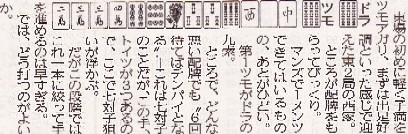
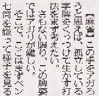
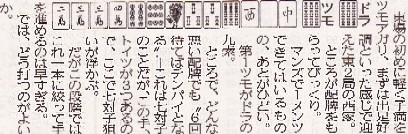
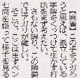

（52）余の辞書にチャンタはない
＞ところが配牌をもらってびっくり。
σ(-_-)もビックリした。東の１局に軽く子満をアガると、こんなにいい配牌がくるのか。
＞第１ツモがドラの９索。
ワ〜オ こうなればチャンタが本線, チートイをカバー手とすれば打。
翻牌を重ねて ドラ入りの早アガリをカバー手とすれば 打か ....と思いつつ回答をみると
って、いきなりチャンタをポイ.....(@_@)
Other stone 他山石 。
（52）余の辞書にチャンタはない
＞ところが配牌をもらってびっくり。
σ(-_-)もビックリした。東の１局に軽く子満をアガると、こんなにいい配牌がくるのか。
＞第１ツモがドラの９索。
ワ〜オ こうなればチャンタが本線, チートイをカバー手とすれば打
翻牌を重ねて ドラ入りの早アガリをカバー手とすれば 打って、いきなりチャンタをポイ.....(@_@)